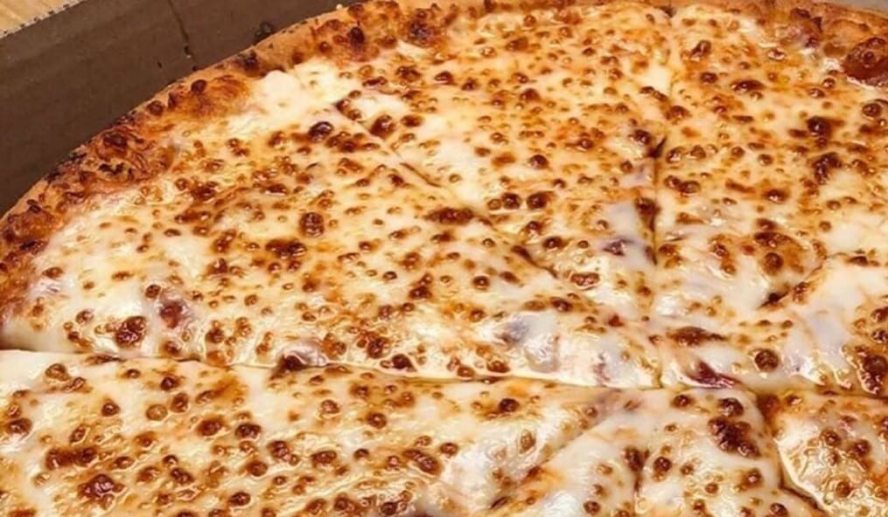
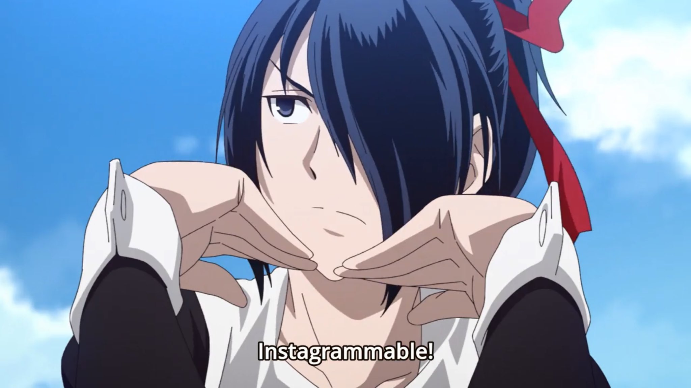

Vico Sotto @vicosotto · 10m Happy Father's Day!
Deep Thoughts @quotetopo... · 1hr Sometimes it feels better not to talk.
Food Porn @Ohfoodsgram · 3hr Pizza pls? #Ohinstagram 
Sana Minatozaki @shyshy... · 4hr is sana gay?
tred of bng slf-awre @daza... · 5hr ishigami yu's character development :O 
NEONBALLSS @junkterrorbill · 10hr Duterte and DDS to the health crisis.